In this document, we discuss the solution of a simple one-dimensional solid mechanics problem, using oomph-lib's Kirchhoff-Love beam elements:
Determine the deformation of a pre-stressed, pressure-loaded elastic beam of length 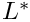 and wall thickness 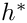 . In its undeformed configuration, the beam is subject to an axial (2nd Piola-Kirchhoff) pre-stress of size 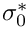 . We wish to compute its deformation when it is loaded by a spatially uniform pressure of size 
A pre-stressed elastic beam under constant pressure loading. |
 .
.
Theory and non-dimensionalisation
oomph-lib's beam elements are based on geometrically nonlinear Kirchhoff-Love beam theory with incrementally linear constitutive equations (Young's modulus  and Poisson's ratio
and Poisson's ratio  ). The equations are implemented in non-dimensional form, obtained by non-dimensionalising all length on some lengthscale
). The equations are implemented in non-dimensional form, obtained by non-dimensionalising all length on some lengthscale  , by scaling the stresses and the applied traction on the beam's effective Young's modulus
, by scaling the stresses and the applied traction on the beam's effective Young's modulus  and by non-dimensionalising time on some timescale
and by non-dimensionalising time on some timescale  so that the dimensional (identified by an asterisk) and non-dimensional variables are related by
so that the dimensional (identified by an asterisk) and non-dimensional variables are related by
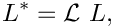
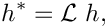
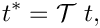
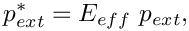
and
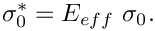
The beam's undeformed shape is parametrised by a non-dimensional Lagrangian coordinate 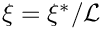 so that the non-dimensional position vector to a material particle on the beam's centreline in the undeformed configuration is given by 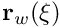 . We denote the unit normal to the beam's undeformed centreline by  . The applied traction
. The applied traction  (a force per unit deformed length of the beam) deforms the beam, causing its material particles to be displaced to their new positions 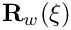; the unit normal to the beam's deformed centreline is
(a force per unit deformed length of the beam) deforms the beam, causing its material particles to be displaced to their new positions 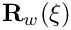; the unit normal to the beam's deformed centreline is  .
.
The non-dimensional form of the principle of virtual displacements that governs the beams deformation is then given by
![\[ \int_0^{L} \left[ (\sigma_0 + \gamma) \ \delta \gamma + \frac{1}{12} h^2 \kappa \ \delta \kappa - \left(\frac{1}{h} \sqrt{\frac{A}{a}} \ {\bf f} - \Lambda^2 \frac{\partial^2 {\bf R}_w}{\partial t^2} \right) \cdot \delta {\bf R}_w \right] \ \sqrt{a} \ d\xi = 0, \ \ \ \ \ \ \ \ \ (1) \]](form_20.png)
where
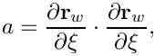
and
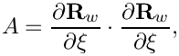
represent the squares of the lengths of infinitesimal material line elements in the undeformed and the deformed configurations, respectively.
![\[ ds = \sqrt{a} \ d\xi \mbox{\ \ \ \ and \ \ \ } dS = \sqrt{A} \ d\xi. \]](form_23.png)
 and
and  may be interpreted as the "1x1 metric
tensors" of the beam's centreline, in the deformed and undeformed configurations, respectively. The ratio 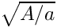 represents the "extension ratio" or the "stretch" of the beam's centreline.
may be interpreted as the "1x1 metric
tensors" of the beam's centreline, in the deformed and undeformed configurations, respectively. The ratio 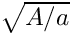 represents the "extension ratio" or the "stretch" of the beam's centreline.
We represent the curvature of the beam's centreline before and after the deformation by
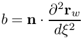
and
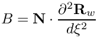
respectively. The ("1x1") strain and and bending "tensors"  and
and  are then given by
are then given by
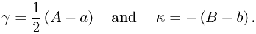
Finally,
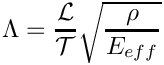
is the ratio of the natural timescale of the beam's in-plane extensional oscillations,
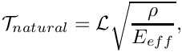
to the timescale  used in the non-dimensionalisation of the equations.
used in the non-dimensionalisation of the equations.  may be interpreted as the non-dimensional wall density, therefore 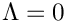 corresponds to the case without wall inertia.
may be interpreted as the non-dimensional wall density, therefore 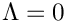 corresponds to the case without wall inertia.
oomph-lib's HermiteBeamElement provides a discretisation of the variational principle (1) with one-dimensional, isoparametric, two-node Hermite solid mechanics elements. In these elements, the Eulerian positions of the nodes, accessible via Node::x(...), are regarded as unknowns, and Hermite interpolation is used to interpolate the position between the nodes, so that the Eulerian position of material points within an element is given by
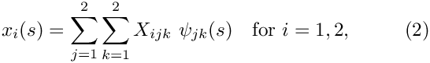
where ![$ s \in [-1,1] $](form_38.png) is the element's 1D local coordinate. The functions 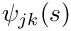 are the one-dimensional Hermite shape functions
is the element's 1D local coordinate. The functions 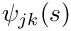 are the one-dimensional Hermite shape functions
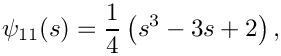
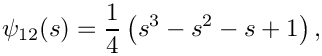
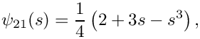
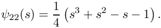
They have the property that
- 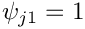 at node
 and 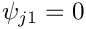 at the other node. Furthermore,
and 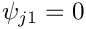 at the other node. Furthermore,  at both nodes.
at both nodes. - 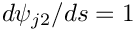 at node and 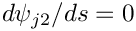 at the other node. Furthermore, 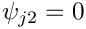 at both nodes.
The mapping (2) therefore provide an independent interpolation for the position and its derivative with respect to the local coordinate  . As a result we have two types of (generalised) nodal coordinates:
. As a result we have two types of (generalised) nodal coordinates:
- 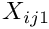 represents the
 -th coordinate of the element's local node .
-th coordinate of the element's local node . - 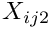 represents the derivative of -th coordinate with respect to the local coordinate , evaluated at the element's local node .
This representation ensures the 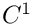 continuity of the wall shape, required by the variational principle (1) which contains second derivatives of 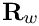. Physically, the inter-element continuity of the slope is enforced by the beam's nonzero bending stiffness.
The two "types" of "generalised" positional degrees of freedom are accessible via the function Node::x_gen(k,i), where Node::x_gen(0,i) 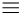 Node::x(i). The two types of positional degrees of freedom correspond to the two types of boundary conditions (pinned and clamped) that can be applied at the ends of the beam. Mathematically, the number of boundary conditions reflects the fact that the Euler-Lagrange equations of the variational principle are of fourth-order.
The nodes of solid mechanics elements are SolidNodes, a generalisation of the basic Node class that allows the nodal positions to be treated as unknowns. Its member function SolidNode::pin_position(...) allows the application of boundary conditions for the (generalised) nodal positions. The table below lists several common boundary conditions and their application:
| Boundary condition | Mathematical condition | Implementation |
| Pinned: 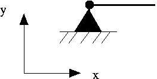 |  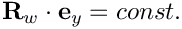 | SolidNode::pin_position(0);SolidNode::pin_position(1); or, equivalently, SolidNode::pin_position(0,0);SolidNode::pin_position(0,1); |
| Pinned, sliding in the x-direction: 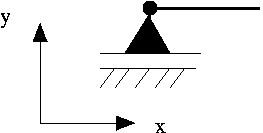 | SolidNode::pin_position(1); or, equivalently, SolidNode::pin_position(0,1); | |
| Pinned, sliding in the y-direction: 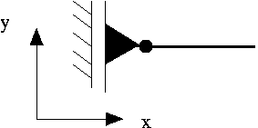 | | SolidNode::pin_position(0); or, equivalently, SolidNode::pin_position(0,0); |
| Clamped: 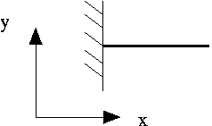 | 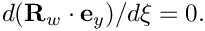 | SolidNode::pin_position(0); SolidNode::pin_position(1); SolidNode::pin_position(1,1); or, equivalently, SolidNode::pin_position(0,0); SolidNode::pin_position(0,1); SolidNode::pin_position(1,1); |
| Clamped, sliding in the y-direction (symmetry boundary condition!) 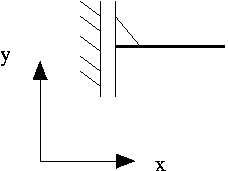 | | SolidNode::pin_position(0); SolidNode::pin_position(1,1); or, equivalently, SolidNode::pin_position(0,0); SolidNode::pin_position(1,1); |
The HermiteBeamElement provides default values for all non-dimensional physical parameters:
- the non-dimensional 2nd Piola Kirchhoff pre-stress 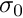 is zero.
- the non-dimensional beam thickness 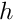 is 1/20.
- the timescale ratio is 1.
- the non-dimensional traction vector
 evaluates to zero.
evaluates to zero.
These values can be over-written via suitable access functions. [Time-dependent computations also require the specification of a timestepper for the elements. This is demonstrated in another example.] The "user" must specify:
- the undeformed wall shape as a
GeomObject– see the earlier example for a discussion ofoomph-lib'sgeometric objects.
Results
The animation shown below illustrates the deformation of the beam under increasing pressure. An increase in pressure initially deflects the beam vertically downwards. The pressure acts as a "follower load" since it always acts in the direction normal to the deformed beam. This causes the beam to deform into an approximately circular shape whose radius increases rapidly.

An approximate analytical solution
Before discussing the details of the numerical solution, we will derive an approximate analytical solution of the problem. The analytical solution will be useful to validate the computational results, and the derivation will allow us to discuss certain aspects of the theory in more detail.
We start by parametrising the beam's undeformed shape as
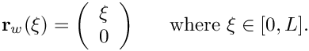
The 1x1 "metric tensor" associated with this parametrisation is given by
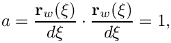
consistent with the fact that the Lagrangian coordinate  is the arclength along the beam's undeformed centreline.
is the arclength along the beam's undeformed centreline.
If the beam is thin (so that 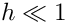) bending effects will be confined to thin boundary layers near its ends. The beam will therefore behave (approximately) like a "string under tension" and its deformed shape will be an arc of a circle. All material line elements will be stretched by the same amount so that the tension is spatially uniform. The position vector to the material particles on the beam's deformed centreline is therefore given by
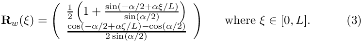
(See the Exercises and Comments for a more detailed discussion of this analytical solution.) Here  is the opening angle of the circular arc as shown in this sketch:
is the opening angle of the circular arc as shown in this sketch:

This deformation generates a uniform stretch of
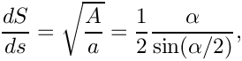
corresponding to a uniform strain
The incremental Hooke's law predicts a linear relation between the (2nd Piola Kirchhoff) stress, , and the (Green) strain, , so that
where is the axial pre-stress that acts in the undeformed configuration.
An elementary force balance shows that the pressure required to deform the beam into the shape specified by (3), is given by "Laplace's law"
where
![\[ R = \frac{L}{2 \sin(\alpha/2)} \]](form_76.png)
is the radius of the circular arc, and the axial tension is given by
In this expression we have used the fact that the 2nd Piola Kirchhoff stress decomposes the (physical) stress vector into the vector . This vector is tangent to the deformed centreline but not necessarily a unit vector.
The pressure required to deform the beam into a circular arc with opening angle is therefore given by
To facilitate comparisons with the numerical solutions, we determine the opening angle as a function of the vertical displacement of the beam's midpoint by determining the auxiliary angle  from
from
The opening angle then follows from
Here is a comparison between the computed and analytically predicted values for the pressure , required to deflect the beam's midpoint by the specified displacement, .

The comparison between the computational results and the analytical predictions is very satisfying but is important to realise that the agreement only validates the numerical solution, not the physical model. |
Global parameters and functions
The namespace Global_Physical_Variables contains the dimensionless beam thickness, , the dimensionless pre-stress, , and the pressure load, , as well as the function Global_Physical_Variables::load() which computes the load vector in the form required by the HermiteBeamElements. (The function's arguments allow the load vector to be a function of the Lagrangian and Eulerian coordinates, and the unit normal to the deformed beam, .)
The driver code
The main code is very short. The physical parameters , and  are initialised and the problem is constructed using 10 elements. Following the usual self-test, we call the function ElasticBeamProblem::parameter_study() to compute the deformation of the beam for a range of external pressures.
are initialised and the problem is constructed using 10 elements. Following the usual self-test, we call the function ElasticBeamProblem::parameter_study() to compute the deformation of the beam for a range of external pressures.
The problem class
The problem class has five member functions, only two of which are non-trivial:
- the problem constructor,
ElasticBeamProblem(...), whose arguments specify the number of elements and the beam's undeformed length. - the function
parameter_study(), which computes the beam's deformation for a range of external pressures.
In the present problem, the functions Problem::actions_before_newton_solve() and Problem::actions_after_newton_solve() are not required, so remain empty. The function ElasticBeamProblem::mesh_pt() overloads the (virtual) function Problem::mesh_pt() to return a pointer to the specific mesh used in this problem. This avoids explicit re-casts when member functions of the specific mesh need to be accessed.
The class also includes three private data members which store a pointer to a node at which the displacement is documented, the length of the domain, and a pointer to the geometric object that specifies the beam's undeformed shape.
The Problem constructor
We start by creating the undeformed centreline of the beam as a StraightLine, one of oomph-lib's standard geometric objects.
We then construct the a one-dimensional Lagrangian mesh in two-dimensional space, using the previously-constructed geometric object to set the initial positions of the nodes.
The OneDLagrangianMesh is a SolidMesh whose constituent nodes are SolidNodes. These nodes store not only their (variable) 2D Eulerian position, accessible via SolidNode::x(...), but also their (fixed) 1D Lagrangian coordinates, accessible via SolidNode::xi(...). The OneDLagrangianMesh constructor assigns the nodes' Lagrangian coordinate, , by spacing them evenly in the range . The GeomObject pointed to by Undef_beam_pt, provides a parametrisation of the beam's undeformed shape in the form , and this is used to determine the nodes's initial Eulerian position.
Next we pin the nodal positions on both boundaries
We then loop over the elements and set the pointers to the physical parameters (the pre-stress and the thickness), the function pointer to the load vector, and the pointer to the geometric object that specifies the undeformed beam shape.
We choose a node near the centre of the beam to monitor the displacements. (If the total number of nodes is even, the control node will not be located at the beam's exact centre; its vertical displacement will therefore differ from the analytical solution that we output in doc_solution(...) – in this case we issue a suitable warning.)
Finally, we assign the equation numbers
The Parameter Study
The function ElasticBeamProblem::parameter_study() is used to perform a parameter study, computing the beam's deformation for a range of external pressures. During the solution of this particular problem, the maximum residual in the Newton iteration can be greater than the default maximum value of 10.0. We increase the default value by assigning a (much) larger value to Problem::Max_residuals.
Next, we choose the increment in the control parameter (the external pressure), set its initial value and open an output file that will contain the value of the external pressure, the mid-point displacement and external pressure computed from the analytical solution. We also create an output stream and a string that will be used to write the complete solution for each value of the external pressure.
In the loop, we increment the external pressure , solve the problem, calculate the analytical prediction for the pressure that is required to achieve the computed deformation, plot the solution and write the pressure, the displacement and exact pressure to the trace file.
Exercises and Comments
- Modify the code so that one end of the beam is no longer fixed in space. What happens? Why?
- Increase the bending effects by increasing the beam's thickness to , say, and by "clamping" its ends, so that at and
 . This condition can be enforced by pinning the "type 1" (slope) positional degree of freedom in the vertical (1) direction at both ends; this requires the insertion of the statement in the loop in themesh_pt()->boundary_node_pt(b,0)->pin_position(1,1);
. This condition can be enforced by pinning the "type 1" (slope) positional degree of freedom in the vertical (1) direction at both ends; this requires the insertion of the statement in the loop in themesh_pt()->boundary_node_pt(b,0)->pin_position(1,1);Problemconstructor. You will have to adjust the number of elements to fully resolve the bending boundary layers. oomph-lib'sdefaultnonlinear solver,Problem::newton_solve(...), provides an implementation of the Newton method, which has the attractive feature that it converges quadratically – provided a good initial guess for the solution is available. Good initial guesses can often (usually?) be generated by computing the solution via a sequence of substeps, as in the above example where we started with a known solution (the undeformed beam – the exact solution for ) and used it as the initial guess for the solution at a small external pressure, . When the Newton method converged, we used the computed solution as the initial guess for the solution at a slightly larger pressure, , etc. If the increase in the load (or some other control parameter) is too large, the Newton method will diverge. To avoid unnecessary computations, the Newton iteration is terminated if:- the number of iterations exceeds
Problem::Max_newton_iterations(which has a default value of 10) - the residual exceeds
Problem::Max_residuals(which has a default value of 10.0)
- the number of iterations exceeds
The Newton method continues until the maximum residual has been reduced to Problem::Newton_solver_tolerance, which has a default value of .
All three values are protected data members of the Problem base class and can therefore be changed in any specific Problem. For instance, in the problem considered above, the undeformed beam provides a poor approximation of its equilibrium shape at the first pressure value. The Newton method still converges (very slowly initially, then quadratically as it approaches the exact solution), even though the initial maximum residual has a relatively large value of 19.6. Here are some exercises that explore the convergence characteristics of the Newton method:
- Experiment with the Newton solver and find the largest value for the load increment,
pext_increment, for which the Newton method still converges. - Explain why the Newton method converges very slowly for small values of and much more rapidly at larger values, even though the load increment,
pext_increment, remains constant. - Compare the solutions for different values of
Problem::Newton_solver_tolerance. Is the default value
adequate? Reduce it to and . What do you observe?
Source files for this tutorial
- The source files for this tutorial are located in the directory:
demo_drivers/beam/tensioned_string/ - The driver code is:
demo_drivers/beam/tensioned_string/tensioned_string.cc
PDF file
A pdf version of this document is available.